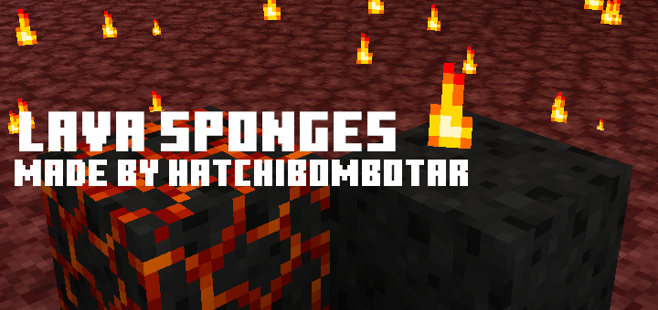
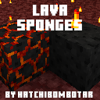
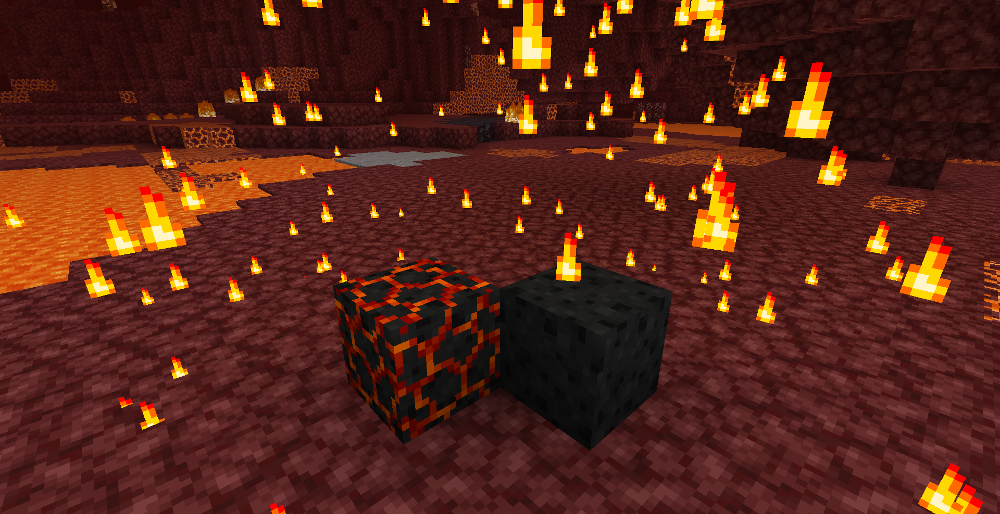

This addon adds one basic block - the lava sponge. It can remove lava from spaces

Lava Sponges
After crafting it with a magma block and basalt surrouning it you can bring it to the nether or any other lava pool.
Once the sponge has been used it becomes useless until you scrape the molten rock off with an axe.

The lava sponge on the right and the molten sponge on the left.

All of my addons are compatible with all devices and all of my other addons. This addon is compatible with almost all other addons.